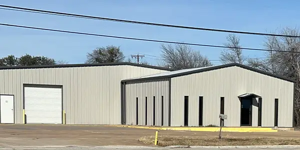

Cross Plains Oil Field Supply

Cross Plains Oil Field Supply Company started out in an old machine shop more than 40 years ago in Cross Plains, Texas. By the late 1970s, to meet the needs of the changing and growing oil and gas drilling market, we built and opened our store in Mineral Wells, Texas. For over 40 years, Cross Plains Oil Field Supply Company has evolved to meet industry demands, expanding our offerings, services, and ability to reach customers where they operate. Backed by a dedicated team and an extensive inventory, along with over 25 cargo “hookup” parts trailers, we remain fully committed to supporting the current and future needs of the oil and gas industry.
